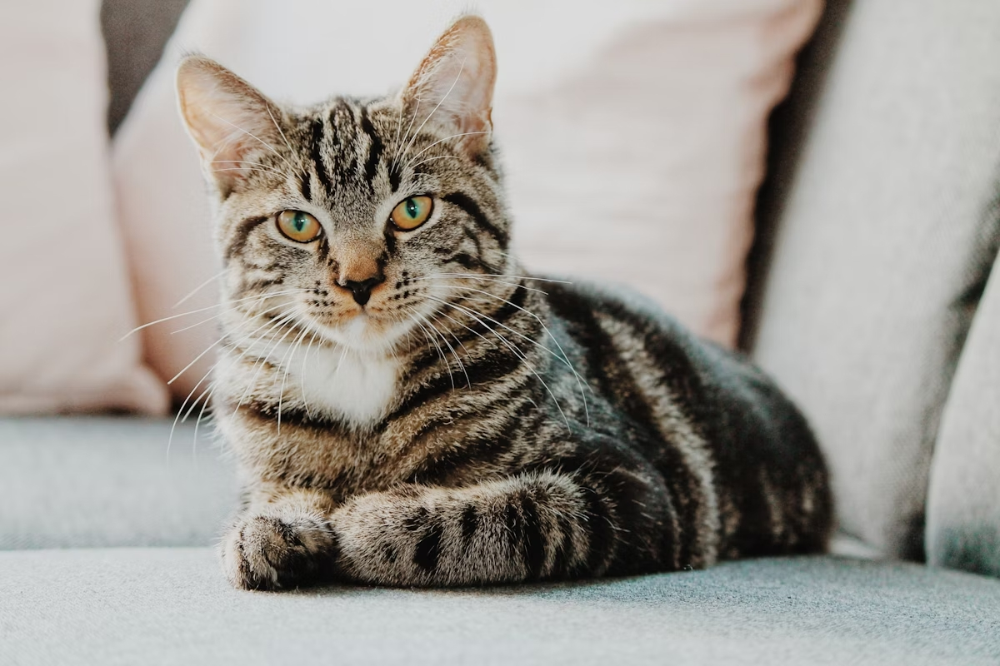
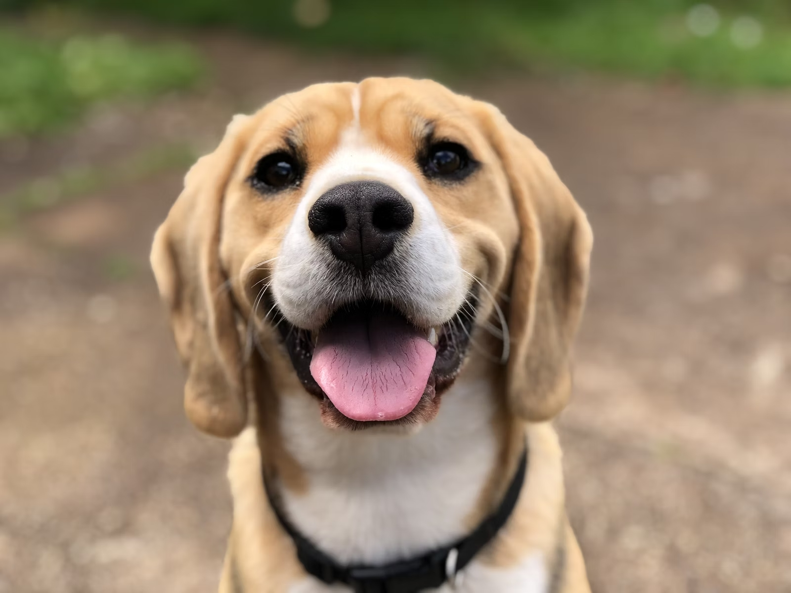
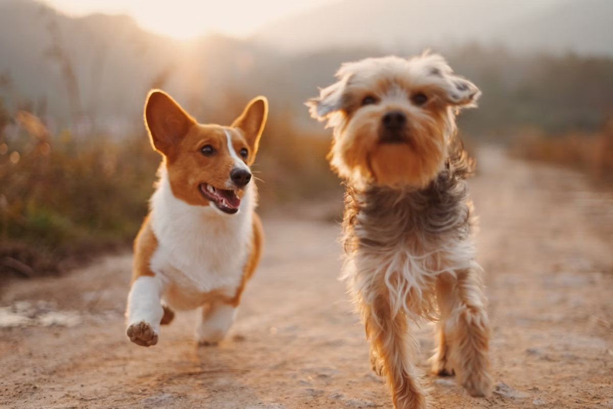
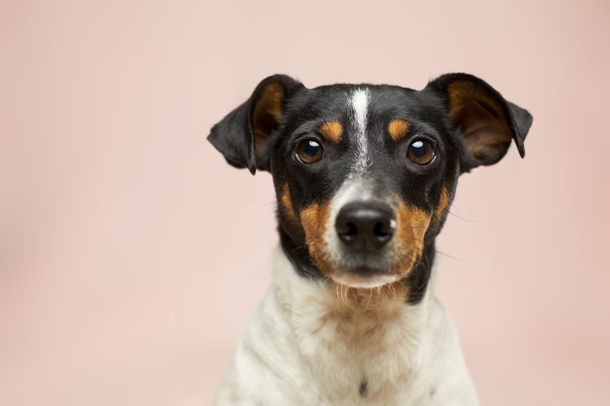

01Gato · 2 años
Luna
Esterilizada, cariñosa y tranquila. Ideal para departamento.
✦ PEQUEÑAS HUELLAS. GRANDES HISTORIAS.
Adopción de mascotas
Conoce a tu próximo compañero y dale una nueva oportunidad.
Una nueva vida empieza
con un primer encuentro.

EL AMOR TAMBIÉN TIENE PATAS01 / CONOCE A TU COMPAÑERO
Selecciona una tarjeta
para conocer más detalles.

01Esterilizada, cariñosa y tranquila. Ideal para departamento.

02Juguetón, vacunado. Le encanta pasear y convivir con niños.

03Curioso y sociable. Se adapta rápido a nuevos espacios.
02 / HISTORIAS QUE CONECTAN
Conoce nuestra campaña
de adopción de mascotas.